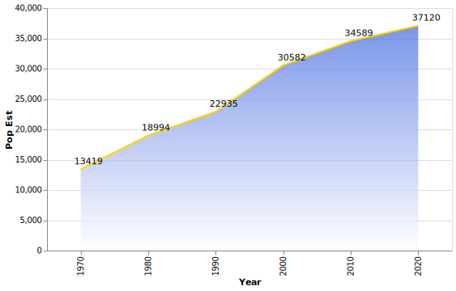
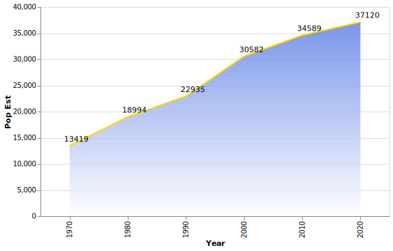

Cottage Grove, a city located ~5 miles southeast of Saint Paul, originally settled in 1844, and officially platted in 1871. It lies on the northern banks of the Mississippi River, and has more adjacent land to the river than any other city in Minnesota.
According to the U.S. Census, the city has a total area of 37.48 square miles, with 3.86 square miles (approx. 10%) of it's area composed of water. (fig 1)
The city consists of 231.39 linear miles of dedicated roadway, with 37.77 miles of dedicated walkways for hiking, running, etc. (fig 2)
The city first appeared in the U.S. Census results in 1970 (?) with a population of 13,419 (est.) residents. Since then, it has grown over 176%, with the 2020 population estimate at 37,120 residents (fig 3).
 
